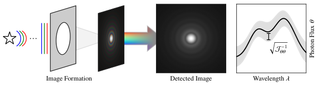
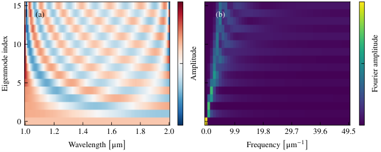
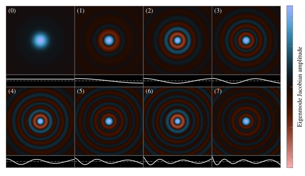
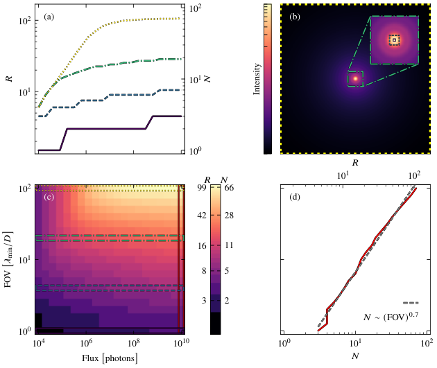
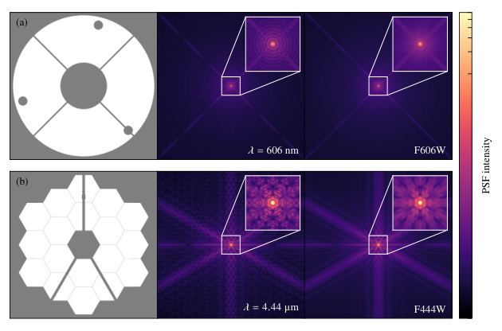
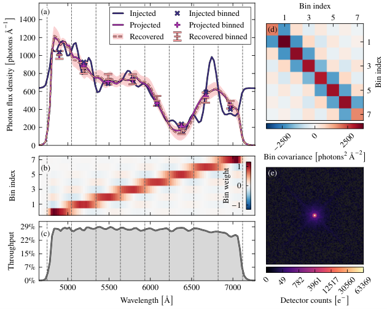

衍射极限图像的光谱信息量
摘要
高分辨率光学成像从根本上受到衍射的限制，衍射会在光学系统的点扩散函数（PSF）上留下随波长变化的结构。这种固有色散特性意味着，图像除空间结构外还编码了光谱信息。本文建立了该光谱信息量的理论，并通过费希尔信息计算给出了最优提取这些信息的策略。我们证明，多色 PSF 的形成过程可在对数坐标下表示为卷积，并定义了相应的光谱传递函数。我们推导了艾里斑的这一函数，发现其随光谱对数频率呈代数衰减，这意味着理想无噪声 PSF 中存在任意精细的光谱结构。我们利用可微前向模型数值构造光谱信息本征基，并在不同噪声和探测器系统误差条件下定量评估衍射极限成像的光谱分辨能力。我们在一个贴近实际的仿真算例中演示了受约束光谱模式的注入与恢复，并将这些结果与已有方法进行了比较。本文的信息论框架为多种成像场景下 PSF 的光谱表征提供了一种可推广的方法。
关键词
Computational spectroscopy, Fisher information, Fourier optics, Inverse problems, Spectral resolution*通信作者：Milo Langker, \linkablemilo.langker@sydney.edu.au
1 引言
成像系统从根本上受限于其所能传递的空间频率范围，由此产生衍射极限的点扩散函数（PSF），其空间尺度取决于波长 [23]。尽管这一效应对图像形成具有普遍性，天文学为其研究提供了天然的场景，也促成了本工作的研究重点。常规地面天文仪器需应对大气湍流导致的分辨率退化，而空间望远镜以及配备足够先进自适应光学的地面系统，其性能可以接近经典衍射极限 [15]。本文中，“衍射极限”一词特指望远镜光阑所施加的有限空间频率支撑，而非任何像面分辨率判据（例如 Rayleigh 判据），后者在实践中往往可以被突破 [40]。
在许多情况下，被观测目标在该分辨率尺度附近或之外呈现出结构，这就要求对点扩散函数（PSF）进行精确校准；此类推断往往需要参数化建模、正则化或约束性先验 [51]。因此，人们已对波前畸变（包括视场相关像差）、光学稳定性以及探测器效应给予了大量关注（例如文献 [36, 16]），而光子收集与带宽模糊之间的权衡则是干涉测量中一个熟悉的问题 [5]。尽管已有这些考虑，据我们所知，任意衍射极限成像中所保留的光谱信息量尚未以严格的信息论方法加以考察。虽然已有工作展示了实际提取某种形式光谱信息的可行性，但本工作旨在量化其基本恢复极限。
在讨论信息量之前，有必要先了解傍轴光学系统中由标量电场形成的图像。按照 Goodman 的标准处理 [23]，当波长为的单色光传播到焦平面时，其电场等于其光阑面场的二维傅里叶变换，这就是夫琅禾费衍射
| (1) |
其中表示焦平面角坐标，表示光阑面物理坐标，其单位与相同。注意，积分前一般可能还存在二次相位前因子；然而，由于我们主要关注PSF——其定义为该场振幅的平方——因此将忽略这些因子。
Defining , and as
| (2) |
我们可以将单色PSF表示为
| (3) |
由于热源的不同波长电场以非相干方式传播，我们可以将多色PSF表示为该单色PSF对光谱光子流量分布的积分。我们采用与单色情形相同的记号，将多色PSF表示为
| (4) |
尽管这些方程仅限于傍轴夫琅禾费传播，我们的数值方法（第2.2节）可推广到任意光阑面内随波长变化的相位或幅度像差，只要这些像差由可微模型参数化。任意傍轴传播可由 Collins 积分给出，其差异包括由系统相关 ABCD 矩阵参数化的缩放因子与色散径向二次相位因子 [13]。
在本工作中，我们证明存在一种“谱传递函数”，它类似于空间频率的光学传递函数（OTF），描述多色点扩散函数（PSF）中光谱频率信息的透过。该函数的支撑范围极具意义；人们凭直觉会预期，对于缺乏专用色散元件的光学系统，其中存在的光谱信息相对极少。用于光谱分辨率的光栅方程（，其中为光阑内被照亮的光栅刻线数，为衍射级次）对于不具备显式周期结构的光阑[37]难以解释。然而，人们也可以类比地将填充光阑视为单刻线光栅（），其相继的衍射旁瓣（例如圆形光阑情形下的艾里环）对应于递增的衍射级次。因此，在信噪比足够高的前提下，我们预期光谱分辨率随视场中存在的最大环而定标。谱传递函数的性质将在2.1节中专门讨论。
已有研究考察了式（4）中色散 PSF 积分的若干结果，证明了光谱信息的存在（例如文献[52, 25]）。先前的研究已在不同程度上实现了这些信息的恢复。特别地，Wang 和 Menon [56, 57]设计了一种光学元件，使其能够最优地编码光谱以便通过计算进行重建，并通过对系统响应矩阵作奇异值分解以及对恢复的光谱作 Tikhonov 正则化证明了这一点。类似地，Yang 等人et al. [59]提出了一种简化的 10 孔设计，并利用宽带 PSF 实现了正则化光谱恢复。在显微成像领域，已有研究通过设计的 PSF 同时恢复单点发射体的位置和颜色[49]。在此基础上，Chen、Gu 和 Liu [12]在一个仅由单个任意形状针孔构成的更简单光学系统上演示了正则化光谱提取。仅凭对单色 PSF 轮廓的了解，他们的方法显式利用多色 PSF 的波长定标关系来重建其光谱，同样采用 Tikhonov 正则化。
在天文观测背景下，PSF 的色散效应通常被当作需要校正的系统误差，而非可加以约束和恢复的信息（例如文献[9]）。Lee 等人et al. [35]证明，在单个通带内，由大气引起的微分色散折射——而非 PSF 的波长定标——可用于推断对应天体的光谱能量分布。最近，Berlfein 等人et al. [3]对Roman Space Telescope类弱引力透镜巡天中的这些光谱效应进行了量化。
尽管研究的重点主要放在抑制与校准上，一些天文研究仍试图利用宽带点扩散函数（PSF）固有的色度特性来恢复（通常是其某个函数形式的）底层源光谱。Kuntzer 等人 [33]提出了一种方法，在经主成分分析（PCA）降维的数据上训练神经网络，对模拟的 Hubble 和 Euclid Space Telescope 图像进行光谱型分类（即 OBAFGKM 分类，对应恒星光谱学中的有效温度标度），其典型误差为半个光谱型。类似地，Centofanti 等人 [11]——其动机是引力透镜的精确建模需要高精度的色度PSF校准——证明了他们能够打破场相关PSF像差与恒星光谱型之间的简并。这些天文方法只选取了离散的类别划分，并未尝试从宽带光度学中恢复底层光谱。然而最近，Cao 等人 [8]借助可微前向模型，在模拟数据、实验室数据以及 Webb 数据上研究了光谱—波前的联合恢复。尽管在比较不同光学构型时使用了信息论工具，但他们的方法与光学文献中的方法一样，并未显式辨识可恢复的光谱自由度、刻画其不确定性，也未证明这种提取达到了信息最优。这些不足正是本文工作的动机。
为量化PSF所编码的光谱信息量，我们采用费希尔矩阵（Fisher matrix）形式体系。从贝叶斯视角出发，大体沿用 Wakefield[55] 和 Gelman[22] 的处理方式，观测费希尔信息矩阵 可定义为对数似然 关于参数 的负海森矩阵。
| (5) |
在拉普拉斯近似下，并假设后验支撑域内对数先验的曲率可以忽略，观测费希尔信息的逆矩阵给出相应高斯后验的协方差矩阵。值得注意的是，观测费希尔信息依赖于数据的一次特定实现 。在一组真参数值 下取期望，即可定义期望费希尔信息 [21]，其表达式为
| (6) |
因此，期望费希尔信息是底层统计模型的一个性质，与任何单次数据实现无关。为简洁起见，后文提及这些量时将省略“Fisher”一词。
拉普拉斯近似的大样本有效性由伯恩斯坦–冯·米塞斯定理（Bernstein–von Mises theorem）[30]所保证，该定理指出：（在适当的正则性条件下）随着数据抽样的增多，后验分布收敛到一个正态分布，其协方差的逆由期望信息给出。在频率学派统计中，已知期望信息决定了最大似然估计围绕这些真实值所服从的正态分布的精密度。其逆（称为克拉美–罗下界（Cramér–Rao bound）[45, 14]）给出了数据生成参数的无偏估计量围绕这些真实参数的协方差的下界，而最大似然估计正是这样一种（只是渐近无偏的）估计量。
在天文学中，费希尔信息方法已被广泛用于量化不确定度并指导实验设计，其中最大化期望信息对应于最小化期望的后验展宽（例如，文献 [41, 34, 24, 53, 1, 17]）。在此，我们对这些期望信息矩阵和观测信息矩阵进行分解，以确定可约束的参数方向，这是天文学中一种成熟的技术（例如，文献 [54, 29, 16]）。为了在大参数空间中求取这些导数矩阵，需要精确且高效的数值方法；因此我们使用 Lux [18]，这是一个基于 Jax [4] 与 Equinox [31] 构建的可微分光学建模库。这些库利用自动微分（autodiff）[38] 高效计算任意复杂函数的梯度。

2 结果
我们构建多色 PSF 形成过程的光谱传递函数形式体系。然后，我们用信息矩阵形式体系考察多色 PSF 光谱的信息量。
2.1 作为光谱卷积的多色性
命题 1.（光谱卷积） 假设多色点扩散函数（PSF）可写为
| (7) |
其中和分别为焦平面的径向与方位角坐标，是归一化的光谱光子流量分布，轮廓不显含波长依赖。假设支撑在有限通带内，且在所考虑的方位角处在上可积。
采用对数坐标和后，在固定方位角处，点扩散函数也可写成一维卷积形式，
| (8) |
where
| (9) |
等价地，在傅里叶域中有
| (10) |
其中光谱传递函数为
| (11) |
此处帽子记号表示关于与对数坐标共轭的角频率的一维傅里叶变换，表示梅林变换。含有量纲的量的对数理解为其在所采用单位下数值的对数。变换约定与证明见方法部分第4.1节。
由式（8）和（10）可知，对于多色点扩散函数，存在一个以角坐标为条件的光谱传递函数。值得注意的是，该光谱传递函数作用于光谱的对数频率表示，这反映了波长的变化对相应单色点扩散函数施加的是乘性标度变换。傅里叶变换的这种对数重标度是光学信号处理中的常用技术（例如文献[10]）；然而据我们所知，将其用于把非相干多色积分变换为卷积尚属首次。该光谱传递函数的幅值决定了点扩散函数形态对光谱对数频率的衰减程度。
尽管对任意光阑产生的点扩散函数给出的一般化处理超出了本工作的范围，下面我们考察艾里斑的光谱传递函数。
2.1.1 艾里斑的光谱卷积核
对于由直径为的圆形无遮挡光阑生成的艾里点扩散函数，与波长无关的轮廓为
| (13) |
其中、和，为1阶第一类贝塞尔函数。
推论 1.（艾里斑的光谱传递函数） 多色艾里斑在任意方位角处的光谱传递函数为
| (14) |
其中表示伽马函数。其幅值具有渐近形式
| (15) |
艾里斑的光谱传递函数并不具有有限支撑（有限光阑的光学传递函数（OTF）才具有有限支撑），也不带限，而是随光谱对数频率渐近趋于幂律。这种代数衰减意味着——原则上——任意精细的光谱结构都会在多色点扩散函数（PSF）上留下一定印记；然而在实践中，有限视场与噪声约束使得在更高光谱对数频率处的恢复呈病态。在存在这些约束的条件下，这些高对数频率光谱模式究竟能恢复到何种程度，将在下一节中采用信息论方法加以研究。
2.2 光谱信息本征基
为了量化在有限视场、噪声与探测器采样条件下哪些光谱模式仍可被约束，我们采用数值方法计算多色点扩散函数中的光谱信息含量。针对给定的光谱、光学模型、探测器模型与似然，我们计算期望信息矩阵 ，其中涉及与每个传播波长相关的流量，记为 。由于 为实对称矩阵，它具有如下特征分解
| (16) |
其中 的各列构成 的标准正交特征向量（即光谱的本征模）， 为特征值按降序排列的对角矩阵。数值构建方法见第 4.3 节。
由于 的元素是信息矩阵 的特征值，在拉普拉斯近似下，模式 的方差倒数由 的第 个对角元给出。因此，我们针对高于某一阈值的特征值（等价地，低于特定阈值的方差）构造一系列受约束的光谱模式。为给这些特征值的比较设定一个自然标度，我们按下式定义模式幅度 ：
| (17) |
如图 3 所示，受约束最强的（零阶）模式充当通带加权的流量归一化项。该模式的幅度提供了一个标度，可用于比较其余模式的方差。我们将标准误差（即信息的平方根倒数）超过该零阶模式某一比例的任何模式定义为无约束模式。
| (18) |
其中 是与模式 相关的信息特征值， 是模式幅度向量 的第零个元素（即零阶模式系数）， 是我们选取的不确定度容限。在第 2.2.2、2.2.3 与 2.2.4 节中，我们采用 。容限的选择见第 4.3 节。
在选定合适的 后，我们得到 个受约束模。我们按下式将受约束模的数目换算为近似的光谱分辨率
| (19) |
其中 、 和 分别表示某一特定通带所透射的中心波长、最大波长和最小波长（参见第 4.3节）。由于该估计只是近似值，参考波长的确切位置（例如取 的算术中点或几何中点）并不影响结果；在下文计算中，我们取 为算术中点。
2.2.1 多色艾里斑的本征模
我们现在考察一个典型例子：光束通过无遮拦的圆形光阑，其带宽跨越一个倍频程。我们在 的视场上施加泊松似然，总流量为 个光子，且每个采样波长处的光子流量相同。仿真过程见第 4.4.1节。

编号为零的本征模（即特征值最大者）在相关波长范围内近似平坦（见图 3(a)），其几乎全部功率集中在零频带内（见图 3(b)）。而其后的本征模通常近似为受通带衰减的正弦函数，且每往后一个本征模都会在相应通带内多引入半个波。图 3(b) 展示了每种模式的这种频率边际增量，并清楚表明这些模式并非严格的正弦函数，而是随阶数增大在频率上展宽。这种光谱展宽是预料之中的，因为第 2.1节中得到的光谱传递函数核作用于对数光谱频率，而非（线性）光谱频率。

2.2.2 通量与视场的缩放
在此，我们针对典型（平坦倍频程通带、艾里斑）示例，确定受约束模数目 以及随后的光谱分辨率 随通量与视场的联合标度关系。光谱分辨率图见图 5(c)，具体计算见4.4.2节。注意，光阑与通带的选择与2.2.1节保持一致。

受约束模的数目以及由此得到的光谱分辨率均随入射通量和视场的增大而增加；不过还可以看出两个附加趋势。第一，对于固定视场，受约束模数目的增长随通量增大而减缓，如图 5(a) 所示。也就是说，尽管每个模的相对不确定度按通量的平方根倒数下降（在泊松情形下），但在某一特定视场内，更多的光谱自由度似乎更难以达到。第二，图 5(d) 表明，在高通量极限下，在所采样范围内，受约束模数目近似随视场呈幂律增长，给出
| (20) |
这一次线性的经验关系描述了在所采样视场范围内，由我们的截断判据所决定的光谱期望信息矩阵的有效秩。
2.2.3 读出噪声与采样效应
在任何实际情形中，光谱模式的可恢复性必然受到探测器效应的影响。其中两个值得注意的方面是探测器读出噪声与采样。在相同的圆形光阑与倍频程通带配置下，我们发现，对于一系列视场，提高读出噪声密度会导致视场的有效截断：低光强的外侧衍射特征被该读出不确定度所主导，如图 6(a) 所示。
2.2.4 基准案例：Webb/NIRCam 与 Hubble/WFC3
本节使用真实仪器与滤光片进行仿真成像，研究光谱分辨率随积分次数的标度关系。我们引入泊松噪声与探测器读出方差，并选取源流量，使最亮像素在每次积分中达到所采用的低于饱和的光电子计数。仪器配置与似然见第 4.4.4 节与第 4.4.5 节。
在 Hubble/WFC3 案例中，我们使用 像素子阵列‘UVIS2-M512C-SUB’考察三种代表性宽带滤光片。结果见图 7(b)。
与预期一致，光谱分辨率的增益 随积分次数增加而减小，与图 5(a) 中固定视场的情形十分相似。值得注意的是，三种滤光片都存在显著欠采样，其中 F275W 尤为严重。虽然可达光谱分辨率还强烈依赖于滤光片的分数带宽 ，如图 7(a) 所示，但其严重欠采样似乎大幅限制了可约束的本征模数目。以 表示时，相对较窄的分数带宽部分补偿了这一损失，但它仍低于长波滤光片的结果。
在 Webb/NIRCam 案例中，我们使用 SUB400P 像素点源成像子阵列考察具有代表性的短波与长波通道滤光片。注意短波与长波通道的焦面比例尺不同，因此两者各自的最长波滤光片均为部分奈奎斯特采样。光谱分辨率见图 7(a)。光阑及其对应的单色与多色点扩散函数（PSF）在相关视场上的显示见图 8。

两个通道中较窄的中带滤光片在可达光谱分辨率方面均明显优于较宽带宽的滤光片。这一结果既可由 对分数带宽的直接依赖关系预期，也可由其在点扩散函数上引起的特征性带宽展宽效应预期。在更宽的通带上积分会降低其空间特征的对比度，从而削弱图像对底层光谱变化的灵敏度，进而减少可用于约束光谱模式的信息量。
2.2.5 光谱注入与恢复

3 讨论与结论
我们首先将本文方法与以往从多色点扩散函数（PSF）中恢复光谱的方法进行比较。如 Wang 和 Menon [57] 所述，对模型矩阵进行奇异值分解，其过程确实与上述步骤相似。在线性模型与独立等方差高斯噪声的极限情况下，我们对信息矩阵的分解将与他们的奇异值分解（SVD）方法一致。如 Nordebo et al. [42] 所证明，在等方差高斯似然下，前向算子的奇异值分解等价于相应信息矩阵的本征分解（仅相差比例因子）。本文方法与 Wang 和 Menon 方法的主要区别在于反演过程：Wang 和 Menon 采用吉洪诺夫正则化而非模态截断，尽管他们也讨论了截断奇异值的做法。此外，他们的方法需要专用光谱仪器，而本文结果可推广至任意衍射 PSF，以及包含更复杂光学与探测器模型的似然。
Chen、Gu 和 Liu [12] 以及 Cao et al. [8] 的研究与本文的光谱信息与恢复形式化框架最为接近。然而，这些图像中保留的光谱模式数目并未得到探究；本文的本征分解既给出有效的光谱分辨率度量，又允许实现信息最优的恢复。我们还证明，非局域模式可投影到近似局域的类平顶基底上，从而验证了这一光谱分辨率度量。
尽管这些方法几乎适用于光学成像的各个领域，但它们或许最适用于天文学。 Webb⟧/NIRCam 和 Hubble/WFC3 的仿真在现实噪声条件下演示了点扩散函数（PSF）光谱分析，表明成像数据中所包含的光谱结构远不止单个光度学观测量。考虑到档案数据中宽带PSF的广泛可用性（例如 [44, 7] 中的观测），我们的方法无需专门的光谱观测，即可对大量目标进行低分辨率光谱恢复。这种光谱恢复需要对远超光谱参数本身的量进行边缘化（例如源位置与天体物理场景、波前像差以及其他光阑面相关考量）。不过，我们的信息论形式体系非常适于这项任务；人们可以在所有模型参数上求值这些矩阵，从而确定它们的协方差。
即使观测者并不关注光谱本身，正确处理PSF的色度效应也是必要的。天体测量、光度学以及高对比度/日冕成像都必然要求精确的PSF校准，其适用性仅取决于能否构造一个可微的前向模型来计算信息矩阵（例如 [20, 8]）。此外，在宽带离焦波前传感过程中，光谱与波前之间的耦合可能构成另一个有价值的应用方向（例如在 The Lazuli Space Observatory [48] 中）。在这些情形下，将光谱固定为某个假定模板、而非推断观测中实际存在的光谱内容，可能会使结果产生严重偏置，尤其是在光谱与其他关注参数存在显著协变时。构造光谱与其他参数的联合本征基（例如光谱-波前联合本征基），并随后分析其协方差，是本工作顺理成章的延伸方向。借助近轴传播的ABCD矩阵形式体系，以及 Jax 与 Lux 的可微性，光在任意光学系统 [28] 中传播时的光谱信息流动也可以被定量刻画：这一任务我们留待未来研究。
我们再次强调，受约束模式的数量 以及相应的光谱分辨率 取决于受约束模式截断 的选择。虽然就我们的目的而言， 所呈现的投影波长级方差相对较小，但引入其他协变参数可能会在很大程度上改变这一情形。在这些情况下，可以灵活调整该截断，以在光谱分辨率与不确定度之间取得所需的任意折中。此外，泊松似然的信息形式（不同于第 4.5.1 节中采用线性模型的固定协方差高斯似然）本质上是局域的；点扩散函数（PSF）的变化会微妙地影响信息矩阵及其后的本征模。预计这种影响会随着非线性程度的增大以及偏离最大似然而增强。本文未尝试精确量化这些本征模的偏差，留待后续研究。无论如何，在这些情况下反演光谱时，可在逼近最大似然的同时，按需迭代地重建并截断本征模。
因此，我们稳健地量化了衍射极限图像中的光谱信息量，并给出了一种恢复这些信息的方法。我们构建了光谱传递函数，描述光谱结构如何被传递，并将光谱信息本征基形式化，量化了在观测约束下仍可恢复的内容。我们进一步证明，这些模式及其不确定度可转换为可解释的局域化光谱分箱，这在现有光学系统的数据处理和未来仪器的实验设计中都有广泛应用。
4 方法
本节给出相关数学推导，描述光谱本征模的构建，详述光学前向模型的参数，并给出光谱恢复流程。
4.1 光谱卷积的推导
为证明命题 1，我们从式 (7) 出发，并采用对数坐标 与 ，其中 。这一变换给出
| (21) |
我们可以将原始多色点扩散函数用其原生坐标向量 表示为
| (28) |
其中 表示逆傅里叶变换，其定义为
| (29) |
处的表观奇异性是径向对数表示的人为产物，而处的值按连续性理解。
为得到式(12)中的有效分辨率换算，回顾一个傅里叶模式的相邻极值相隔。由可知，以为几何中心的相应波长间隔为
| (30) |
取倒数并乘以即得，与式(12)一致。该近似在很小时由得出。
4.2 艾里斑光谱传递函数的推导
为证明推论 1，我们使用式(13)中的艾里轮廓（Airy profile）。方位角对称性使光谱核与无关，其傅里叶变换为
| (31) |
经过大量代数运算，我们得到第一类一阶贝塞尔函数平方的梅林变换
| (32) |
其中我们作变量代换。
的梅林变换由 DLMF [19]中的式(10.22.57)给出。用Wolfram Mathematica [58]化简后得到式(14)。
4.3 光谱本征模的数值构造与选取
该方法首先以适当的吞吐量函数加权、非相干地传播固定数量的波长，从而近似式(7)给出的多色点扩散函数（PSF）。在施加任何相关探测器模型之后（例如在第4.4.3节与第4.4.4节中对像素宽度积分），我们计算关于各传播波长所对应流量的期望信息矩阵（这些对应于我们的参数）。
本征模在欧几里得内积下是标准正交的。这些本征模按构造在信息度量下同样正交，其平方范数为，即满足
| (35) |
其中为克罗内克δ函数。
在预测中我们采用（式(18)），因为超过该值后我们发现，与额外模式相关的波长空间不确定度会超过所保留的额外光谱结构。尽管如此，这一选择是灵活的，可以调节，以便在光谱分辨率（来自更多模式）与重建不确定度（来自更大的模态不确定度）之间取得所需的折衷，尤其是当其他（此处未考虑的）参数与光谱协变时。关于这种信息本征模截断的示例与讨论，见参考文献[54, 29, 16, 42]。
光谱分辨率表达式(19)源于将恢复的模式数解释为通带内独立约束的光谱自由度的有效数目。若通带跨度为宽度 ，并被划分为 个光谱单元，则每个单元的特征宽度为 。将其代入光谱分辨率的常规定义 ，并在中心波长 处求值，即得上述表达式。
4.4 仿真光阑、探测器与观测
本节给出与特定构型和仪器的推断光谱分辨率相关的参数。
4.4.1 典型艾里斑示例
我们使用光传播与优化软件包 Lux 构建相应的光阑与焦平面，并在 的视场内实现泊松似然。我们将总光子流量设为 光子，最小波长 设为 ，直径 设为 。我们传播 101 个线性间隔的波长，其光子流量均相同，并考察所得的本征模。
采用波长上均匀（而非对数）的采样来计算和表示模式，是为了使所得本征模更易获得物理解释性，并与天文学中仪器吞吐量和光谱的采样惯例保持一致。
4.4.2 流量与视场标度
4.4.3 读出噪声与采样
我们采用圆形光阑和平坦倍频程通带，固定流量为 光子。在图 6(a) 的读出噪声计算中，我们采用高斯近似，其单像素方差等于泊松散粒噪声方差与探测器读出噪声方差之和。在子图 (b) 的采样计算中，我们使用不含探测器读出噪声的泊松似然。我们比较了固定角视场下的采样变化与固定探测器像素数下的变化；在后一种情况下，增大角像素尺寸也会增大视场。探测器模型在像素宽度上进行积分。读出噪声密度定义为每个方形奈奎斯特元（即 像素块）的均方根（RMS） 值。欠采样因子定义为对奈奎斯特间隔欠采样的倍数。因子为 1 表示 （即奈奎斯特）采样，因子为 2 表示 采样，因子为 1/2 表示 采样，等等。
4.4.4 Hubble/WFC3
注意到期望信息随重复实验次数呈可加性增长，我们定义了一个形式适当的高斯似然，其中包含泊松方差与探测器读出方差，并在一个所选光源上求值，使最亮像素达到相应探测器格式所推荐的最大光电子计数。
4.4.5 Webb/NIRCam
Webb/NIRCam 的情形 [46] 由于 HgCdTe 红外探测器上的非破坏性升坡（up-the-ramp）读出而带来额外的复杂性。这里我们采用单一读出模式，共 10 个组，每组包含一帧且不跳帧，对应于 'RAPID' 读出模式。随后按照文献 [47] 所述，通过坡度拟合协方差传播逐帧读出噪声。每次积分均假定在 SUB400P 像素点源成像子阵列 [50] 中，最亮像素达到推荐的未饱和流量（短波与长波通道分别为 和 ）。需要指出，短波与长波通道的焦面比例尺不同，因此两者的最长波长滤光片仅达到部分奈奎斯特采样。与 WFC3 的情形类似，在计算受约束模的数量并换算为光谱分辨率 之前，先将期望信息矩阵乘以积分次数 ，结果示于图 7(a)。光阑及其对应的单色与多色点扩散函数（PSF）在相关视场中的分布示于图 8。
4.5 光谱恢复与不确定度传播
本节给出在仿真宽带观测中进行光谱注入与恢复所采用的方法。
4.5.1 恢复流程
我们通过拟合可恢复的光谱模来进行光谱恢复。在本例中，我们以总流量等于图像中光电子计数总和的平谱作为初值，在该谱处计算观测信息矩阵，并对其进行对角化以构造正交本征模。随后可将优化限制在由我们的选择判据所确定的受约束模上。
我们使用 像素裁剪窗口的 Hubble/WFC3 UVIS2 探测器，最亮像素上限为 ，同时施加泊松散粒噪声与每像素 RMS 的读出噪声。我们注入由 30 个模构成的光谱，其中约束 8 个。由于我们的模型在光谱本征模上是线性的，且高斯不确定度固定（由读出噪声方差与泊松方差求和得到），因此最大似然系数可通过线性最小二乘求解直接获得。尽管如此，我们仍测试了采用自然梯度下降与 BFGS 算法 [2, 6] 的一阶与二阶优化，以便在适用时处理潜在的非线性（例如探测器响应函数）。注入与恢复仿真的结果示于图 9。
在第 2.2.5 节中，我们采用了略为更严格的判据，忽略 截止内的最后一个模，以便更好地展示恢复光谱。
4.5.2 投影协方差与有效分箱
在截断至个约束模式后，我们通过线性变换把不确定度传播到原始（波长-流量）基下的投影光谱。给定本征模系数的截断精密度矩阵与本征模矩阵（其中为原始波长采样点数），波长-流量基下的协方差矩阵为
| (36) |
其中下标表示我们不再考虑完整的矩阵，而是截断至个模式。
模式截断后的分箱构成另一个线性变换，分箱流量中的协方差矩阵可表示为
| (37) |
其中是矩阵，其各列代表分箱权重（取分箱数等于约束模式数）。
该协方差表示投影到截断模式基中的光谱各分箱内的不确定度，而不是真实未截断光谱各分箱内的不确定度。然而，到所保留模式子空间的投影算符为
| (38) |
由于这些模式是欧氏正交归一的（式(35)）。又因是对称的，我们有
| (39) |
因此，对投影光谱进行分箱等价于把有效分箱权重直接作用于未投影光谱。
4.5.3 分箱区间的选取
披露
作者声明不存在可能影响本研究客观性或本文撰写的经济利益、商业从属关系或其他潜在利益冲突。
致谢
我们谨此承认并敬重悉尼大学与麦考瑞大学所在土地的传统守护者，我们在其未经割让、拥有主权的祖传土地上开展工作。我们向他们的祖先和后裔致以敬意，他们与这片土地（Country）之间始终维系着文化与精神上的联系。
BP 和 PT 获得澳大利亚研究理事会（Australian Research Council）资助项目 DP230101439 的支持；ML 和 HG 获得澳大利亚政府研究培训计划（RTP）奖学金的支持。我们感谢澳大利亚公众为这项科学研究提供的支持。Lux 的开发由突破基金会（Breakthrough Foundation）通过其 Toliman 项目资助，属于
本工作中用于完成分析并生成图形的全部代码可在 https://github.com/milolangker/spectral-info 获取。 部分代码的开发使用了 Claude (Anthropic) 和 ChatGPT (OpenAI)。作者对本工作承担全部责任。
References
- [1] (2026) Mapping the Information Geometry of an Unresolved Dark Matter Population using a Differentiable Strong Lensing Simulator. arXiv e-prints, pp. arXiv:2608.18224. Note: [doi:10.48550/arXiv.2608.18224] External Links: Document, 2608.18224 Cited by: §1.
- [2] (1998) Natural gradient works efficiently in learning. Neural Computation 10 (2), pp. 251–276. Note: [doi:10.1162/089976698300017746] External Links: ISSN 0899-7667, Document, Link, https://direct.mit.edu/neco/article-pdf/10/2/251/813415/089976698300017746.pdf Cited by: §4.5.1.
- [3] (2025) Chromatic effects on the PSF and shear measurement for the Roman Space Telescope High-Latitude Wide Area Survey. MNRAS 542 (2), pp. 608–628. Note: [doi:10.1093/mnras/staf1255] External Links: Document, 2505.00093 Cited by: §1.
- [4] (2018) JAX: composable transformations of Python+NumPy programs. Note: http://github.com/jax-ml/jaxVersion 0.3.13 External Links: Link Cited by: §4, §1, §4.3.
- [5] (1999) Bandwidth and Time-Average Smearing. In Synthesis Imaging in Radio Astronomy II, G. B. Taylor, C. L. Carilli, and R. A. Perley (Eds.), Astronomical Society of the Pacific Conference Series, Vol. 180, pp. 371. Cited by: §1.
- [6] (1970) The Convergence of a Class of Double-rank Minimization Algorithms: 2. The New Algorithm. IMA Journal of Applied Mathematics 6 (3), pp. 222–231. Note: [doi:10.1093/imamat/6.3.222] External Links: ISSN 0272-4960, Document, Link, https://academic.oup.com/imamat/article-pdf/6/3/222/1848059/6-3-222.pdf Cited by: §4.5.1.
- [7] (2023) JWST/NIRCam Discovery of the First Y+Y Brown Dwarf Binary: WISE J033605.05-014350.4. ApJ 947 (2), pp. L30. Note: [doi:10.3847/2041-8213/acc86d] External Links: Document, 2303.16923 Cited by: §3.
- [8] (2026) Coronagraph as a spectrograph: spectrum and aberration recovery from a single broadband telescope image. In Advances in Optical and Mechanical Technologies for Telescopes and Instrumentation VII, Ramón. Navarro and R. Jedamzik (Eds.), Society of Photo-Optical Instrumentation Engineers (SPIE) Conference Series, Vol. 14154, pp. 141544M. Note: [doi:10.1117/12.3104701] External Links: Document Cited by: §1, §3, §3.
- [9] (2018) Wavelength-dependent PSFs and their impact on weak lensing measurements. MNRAS 479 (2), pp. 1491–1504. Note: [doi:10.1093/mnras/sty1636] External Links: Document, 1804.04277 Cited by: §1.
- [10] (1976) Optical Mellin transforms using computer generated holograms. Optics Communications 19 (2), pp. 217–222. Note: [doi:10.1016/0030-4018(76)90346-1] External Links: Document Cited by: §2.1.
- [11] (2025) Breaking the degeneracy in stellar spectral classification from single wide-band images. A&A 694, pp. A228. Note: [doi:10.1051/0004-6361/202452224] External Links: Document, 2501.16151 Cited by: §1.
- [12] (2024) Ultra-simplified diffraction-based computational spectrometer. Light: Science & Applications 13 (1), pp. 9. Note: [doi:10.1038/s41377-023-01355-4] External Links: Document Cited by: §1, §3.
- [13] (1970) Lens-System Diffraction Integral Written in Terms of Matrix Optics*. Journal of the Optical Society of America (1917-1983) 60 (9), pp. 1168. Note: [doi:10.1364/JOSA.60.001168] External Links: Document Cited by: §1.
- [14] (1946) Mathematical methods of statistics. Princeton University Press, Princeton, NJ. Cited by: §1.
- [15] (2012) Adaptive Optics for Astronomy. ARA&A 50, pp. 305–351. Note: [doi:10.1146/annurev-astro-081811-125447] External Links: Document, 1201.5741 Cited by: §1.
- [16] (2026) AMIGO: A data-driven calibration of the JWST interferometer. PASA 43, pp. e075. Note: [doi:10.1017/pasa.2026.10194] External Links: Document Cited by: §1, §1, §4.3.
- [17] (2026) Differentiable optics with dLux II: optical design maximising Fisher information. The Open Journal of Astrophysics 9. Note: [doi:10.33232/001c.172540] External Links: Link, 2406.08704, Document Cited by: §1.
- [18] (2023) Differentiable optics with dLux: I–deep calibration of flat field and phase retrieval with automatic differentiation. J. Astron. Telesc. Instrum. Syst. 9 (02), pp. 028007. Note: [doi:10.1117/1.jatis.9.2.028007] External Links: Document, ISSN 2329-4124, Link Cited by: §1, §4.3.
- [19] NIST Digital Library of Mathematical Functions. Note: https://dlmf.nist.gov/, Release 1.2.7 of 2026-06-15F. W. J. Olver, A. B. Olde Daalhuis, D. W. Lozier, B. I. Schneider, R. F. Boisvert, C. W. Clark, B. R. Miller, B. V. Saunders, H. S. Cohl, and M. A. McClain, eds. External Links: Link Cited by: §4.2, §4.2.
- [20] (2025) Exoplanet Detection via Differentiable Rendering. arXiv e-prints, pp. arXiv:2501.01912. Note: [doi:10.48550/arXiv.2501.01912] External Links: Document, 2501.01912 Cited by: §3.
- [21] (1925) Theory of Statistical Estimation. Proceedings of the Cambridge Philosophical Society 22 (5), pp. 700. Note: [doi:10.1017/S0305004100009580] External Links: Document Cited by: §1.
- [22] (2013) Bayesian data analysis. 3 edition, Chapman & Hall/CRC Texts in Statistical Science, CRC Press, Boca Raton, FL. External Links: ISBN 978-1-4398-4095-5 Cited by: §1.
- [23] (2005) Introduction to fourier optics. 3rd edition, Roberts & Company Publishers, Englewood, CO. Cited by: §1, §1.
- [24] (2023) Reaching the fundamental sensitivity limit of wavefront sensing on arbitrary apertures with the Phase Induced Amplitude Apodized Zernike Wavefront Sensor (PIAA-ZWFS).. In Adaptive Optics for Extremely Large Telescopes 7th Edition, Avignon, France. Note: [doi:10.13009/AO4ELT7-2023-081] External Links: Link, Document Cited by: §1.
- [25] (2017) Spatial-spectral (space-wavenumber) correspondence relationship and Fresnel zone spectra. Journal of the Optical Society of America A 34 (3), pp. 356. Note: [doi:10.1364/JOSAA.34.000356] External Links: Document Cited by: §1.
- [26] (2020) Array programming with NumPy. Nature 585 (7825), pp. 357–362. Cited by: §4.
- [27] (2007) Matplotlib: a 2D graphics environment. Computing In Science & Engineering 9 (3), pp. 90–95. Cited by: §4.
- [28] (2024) Continuity equation for the flow of Fisher information in wave scattering. Nature Physics 20 (8), pp. 1294–1299. Note: [doi:10.1038/s41567-024-02519-8] External Links: Document, 2309.00010 Cited by: §3.
- [29] (2003) Parametrization of Dark-Energy Properties: A Principal-Component Approach. Phys. Rev. Lett. 90 (3), pp. 031301. Note: [doi:10.1103/PhysRevLett.90.031301] External Links: Document, astro-ph/0207517 Cited by: §1, §4.3, §4.5.2.
- [30] (2025) How good is your Laplace approximation of the Bayesian posterior? finite-sample computable error bounds for a variety of useful divergences. Journal of Machine Learning Research 26 (87), pp. 1–81. External Links: Link Cited by: §1.
- [31] (2021) Equinox: neural networks in JAX via callable PyTrees and filtered transformations. In Differentiable Programming workshop at Neural Information Processing Systems 2021, Note: https://arxiv.org/abs/2111.00254. [doi:10.48550/arXiv.2111.00254] External Links: Document, Link Cited by: §4, §1.
- [32] (2008) Wide Field Camera 3: a powerful new imager for the Hubble Space Telescope. In Space Telescopes and Instrumentation 2008: Optical, Infrared, and Millimeter, J. M. Oschmann, M. W. M. de Graauw, and H. A. MacEwen (Eds.), Vol. 7010, pp. 70101E. Note: [doi:10.1117/12.789581] External Links: Document, Link Cited by: §4.4.4.
- [33] (2016) Stellar classification from single-band imaging using machine learning. A&A 591, pp. A54. Note: [doi:10.1051/0004-6361/201628660] External Links: Document, 1605.03201 Cited by: §1.
- [34] (1999) Cramér–Rao analysis of phase-diverse wave-front sensing. J. Opt. Soc. Am. A 16 (5), pp. 1005–1015. Note: [doi:10.1364/JOSAA.16.001005] External Links: Link, Document Cited by: §1.
- [35] (2019) Sub-band Image Reconstruction Using Differential Chromatic Refraction. AJ 157 (5), pp. 182. Note: [doi:10.3847/1538-3881/ab139f] External Links: Document, 1807.07211 Cited by: §1.
- [36] (2023) Point spread function modelling for astronomical telescopes: a review focused on weak gravitational lensing studies. Frontiers in Astronomy and Space Sciences 10, pp. 1158213. Note: [doi:10.3389/fspas.2023.1158213] External Links: Document, 2306.07996 Cited by: §1.
- [37] (1997) Diffraction gratings and applications. CRC Press. Cited by: §1.
- [38] (2019) A review of automatic differentiation and its efficient implementation. WIREs Data Mining and Knowledge Discovery 9 (4), pp. e1305. Note: [doi:10.1002/widm.1305] External Links: Document, ISSN 1942-4795, Link Cited by: §1.
- [39] (2025) Wide field camera 3 instrument handbook, version 18.0. Space Telescope Science Institute, Baltimore, MD. Cited by: §4.4.4.
- [40] (2017) Upholding the diffraction limit in the focusing of light and sound. Wave Motion 68, pp. 182–189. Note: [doi:10.1016/j.wavemoti.2016.09.012] External Links: Document Cited by: §1.
- [41] (2014) Analysis of the Cramér-Rao Bound in the Joint Estimation of Astrometry and Photometry. PASP 126 (942), pp. 798. Note: [doi:10.1086/678041] External Links: Document, 1407.3753 Cited by: §1.
- [42] (2013) Fisher information analysis in electrical impedance tomography. Journal of Geophysics and Engineering 10 (6), pp. 064008. Note: [doi:10.1088/1742-2132/10/6/064008] External Links: Document Cited by: §3, §4.3, §4.5.2.
- [43] (2001) Asymptotics and mellin-barnes integrals. Encyclopedia of Mathematics and its Applications, Cambridge University Press. Cited by: §4.1.
- [44] (2013) Dancing in the Dark: New Brown Dwarf Binaries from Kernel Phase Interferometry. ApJ 767 (2), pp. 110. Note: [doi:10.1088/0004-637X/767/2/110] External Links: Document, 1302.6682 Cited by: §3.
- [45] (1945) Information and accuracy attainable in the estimation of statistical parameters. Bulletin of the Calcutta Mathematical Society 37, pp. 81–91. Cited by: §1.
- [46] (2023) Performance of NIRCam on JWST in Flight. PASP 135 (1044), pp. 028001. Note: [doi:10.1088/1538-3873/acac53] External Links: Document, 2212.12069 Cited by: §4.4.5.
- [47] (2009) Derivation of Correct Noise Equation for General MULTIACCUM Readout. Technical report Technical Report JWST-STScI-001853, STScI. Note: Technical Report JWST-STScI-001853 Cited by: §4.4.5.
- [48] (2026) The Lazuli Space Observatory: Architecture & Capabilities. arXiv e-prints, pp. arXiv:2601.02556. Note: [doi:10.48550/arXiv.2601.02556] External Links: Document, 2601.02556 Cited by: §3.
- [49] (2016) Multicolour localization microscopy by point-spread-function engineering. Nature Photonics 10 (9), pp. 590–594. Note: [doi:10.1038/nphoton.2016.137] External Links: Document Cited by: §1.
- [50] (2026) JWST Near Infrared Camera (NIRCam) User Documentation. Baltimore, MD. Note: JWST User Documentation, https://jwst-docs.stsci.edu/jwst-near-infrared-cameraAccessed 20 August 2026 External Links: Link Cited by: §4.4.5.
- [51] (2002) Deconvolution in Astronomy: A Review. PASP 114 (800), pp. 1051–1069. Note: [doi:10.1086/342606] External Links: Document Cited by: §1.
- [52] (1990) Optical transfer function of a diffraction-limited system for polychromatic illumination. Appl. Opt. 29 (4), pp. 554–558. Note: [doi:10.1364/AO.29.000554] External Links: Document Cited by: §1.
- [53] (2026) Differentiable design of the PIAA-ZWFS: a flexible wavefront sensor that approaches the fundamental limit. arXiv e-prints, pp. arXiv:2606.28136. Note: [doi:10.48550/arXiv.2606.28136] External Links: Document, 2606.28136 Cited by: §1.
- [54] (1997) Karhunen-Loève Eigenvalue Problems in Cosmology: How Should We Tackle Large Data Sets?. ApJ 480 (1), pp. 22–35. Note: [doi:10.1086/303939] External Links: Document, astro-ph/9603021 Cited by: §1, §4.3.
- [55] (2013) Bayesian and frequentist regression methods. 1 edition, Springer Series in Statistics, Springer, New York, NY. Note: [doi:10.1007/978-1-4419-0925-1] External Links: Document, ISBN 978-1-4419-0925-1 Cited by: §1.
- [56] (2014) Computational spectrometer based on a broadband diffractive optic. Optics Express 22 (12), pp. 14575. Note: [doi:10.1364/OE.22.014575] External Links: Document Cited by: §1.
- [57] (2014) Computational spectroscopy via singular-value decomposition and regularization. Optics Express 22 (18), pp. 21541. Note: [doi:10.1364/OE.22.021541] External Links: Document Cited by: §1, §3.
- [58] (2026) Mathematica, Version 15.0. Note: Champaign, ILhttps://www.wolfram.com/mathematica External Links: Link Cited by: §4, §4.2.
- [59] (2015) Miniature spectrometer based on diffraction in a dispersive hole array. Optics Letters 40 (13), pp. 3217. Note: [doi:10.1364/OL.40.003217] External Links: Document Cited by: §1.
Milo Langker 是悉尼大学天文学专业的博士研究生，此前他在该校完成了本科及荣誉学位的学习。他在光学和天文学领域合作发表了多篇论文，目前的研究兴趣包括光学系统的信息论极限及其在新型推理技术中的应用。
其他作者的简介暂缺。
List of Figures
List of Tables